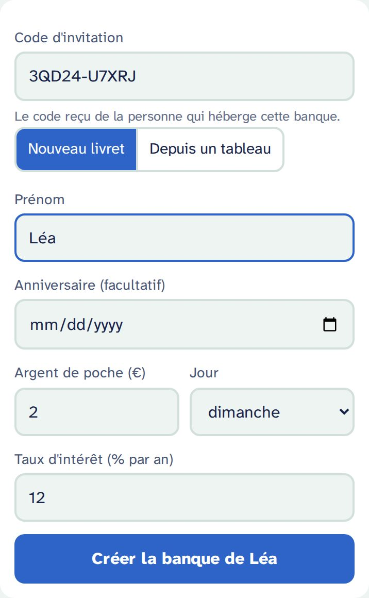
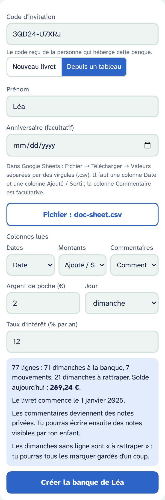
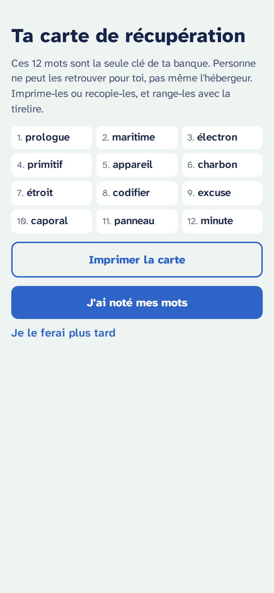
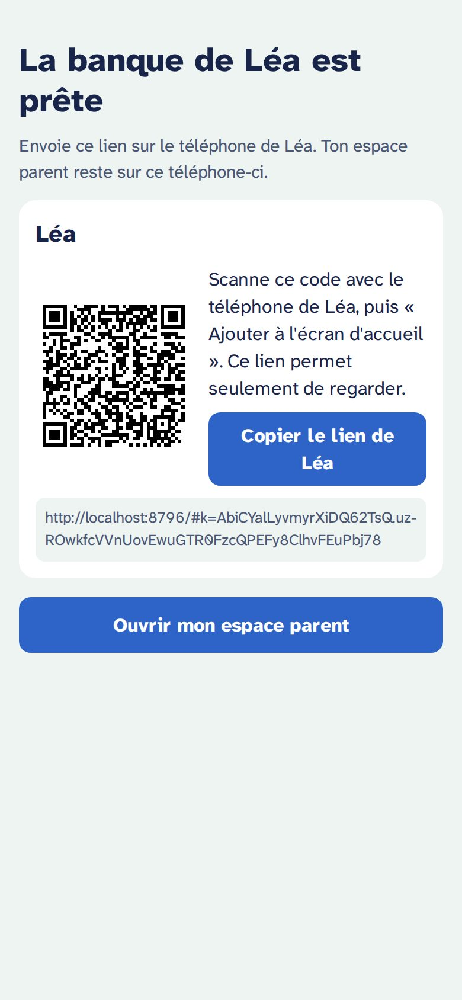
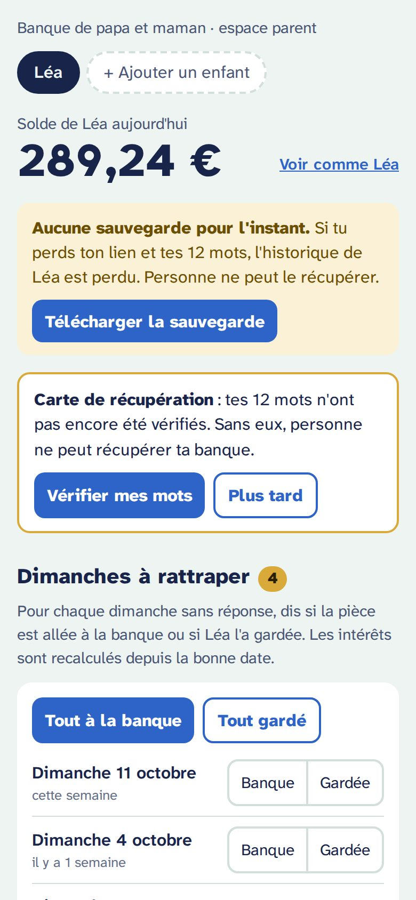
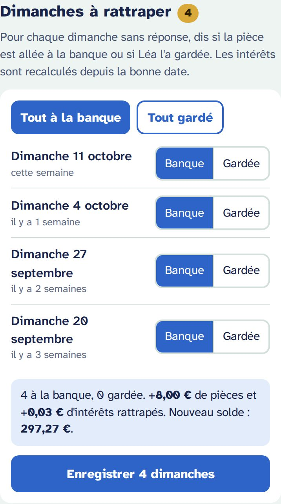
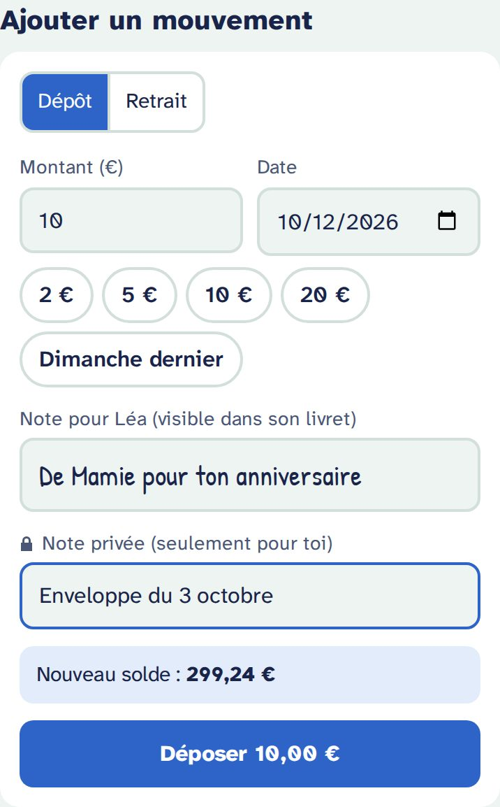
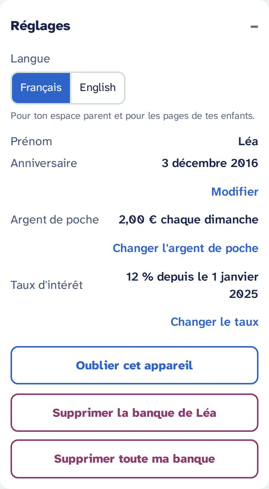
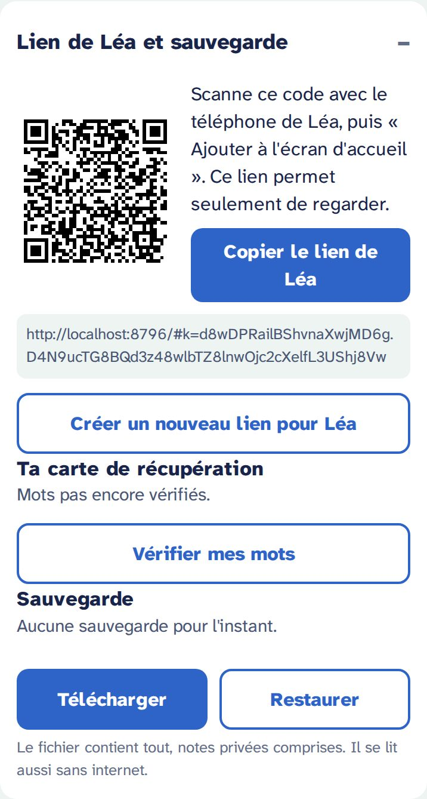

Créer la banque de ton enfant
Tu as une invitation, ou tu as touché « Créer ma banque » sur ta page d'administration. Voici les quatre étapes, puis tout ce que tu fais ensuite, semaine après semaine.
Fais-le sur le téléphone que tu utiliseras comme parent : il se souviendra de ta banque. Prévois cinq minutes, et une imprimante si tu en as une (sinon un papier et un stylo).
1. Le formulaire
- Prénom : celui que ton enfant verra (« Bonjour Léa ! »). Un surnom marche aussi.
- Anniversaire (facultatif) : la page de ton enfant montre ce qu'il pourrait avoir « pour tes 10 ans ». Sans date, elle parle de « dans 6 mois ».
- Argent de poche et jour : par exemple 2 € chaque dimanche. Ce sont les « pièces du dimanche » que ton enfant met à la banque, ou garde.
- Taux d'intérêt : 12 % par an par défaut. C'est généreux exprès : assez pour qu'un enfant voie son argent grandir. Tu pourras le changer plus tard, à partir d'une date.

Tu as déjà un tableau (Google Sheets) ?
Choisis Depuis un tableau et reprends tout l'historique :
- Dans Google Sheets : Fichier → Télécharger → Valeurs séparées par des virgules (.csv).
- Touche Choisir le fichier CSV. Le fichier est lu sur ton téléphone : il n'est envoyé nulle part.
- Vérifie « Colonnes lues » : la colonne des dates, celle des montants (les dépôts et retraits, pas le solde !), et celle des commentaires. Change-les si besoin.
- Lis le résumé : nombre de lignes, de dimanches à la banque, de mouvements, de dimanches « à rattraper », et le solde d'aujourd'hui.
Bon à savoir : les dates écrites 05/01/2025, 2025-01-05, 01/Mar/2025 ou 5 janv. 2025 sont comprises. Les lignes datées après aujourd'hui (un tableau prévu à l'avance) sont laissées de côté. Les commentaires deviennent des notes privées, que ton enfant ne voit pas.

2. La carte de récupération
Juste après la création, l'app te montre 12 mots. Ce sont la seule clé de ta banque : si tu perds ton téléphone et ces mots, personne ne peut récupérer la banque, pas même l'hébergeur.
- Touche Imprimer la carte : une page avec les 12 mots numérotés, un QR code qui ouvre ton espace parent, et la date. Pas de prénom dessus.
- Pas d'imprimante ? Recopie les 12 mots dans l'ordre, sur papier.
- Range la carte avec la tirelire, ou avec tes papiers importants. Pas en photo sur ton téléphone.
Ensuite, J'ai noté mes mots : l'app te demande 3 mots au hasard pour vérifier. Je le ferai plus tard existe, mais l'app te le rappellera chaque mois.

3. Le lien de ton enfant
L'app affiche le lien et le QR code de ton enfant. Ce lien permet seulement de regarder : avec lui, on ne peut rien modifier.
- Scanne le QR code avec le téléphone (ou la tablette) de ton enfant, ou envoie-lui le lien.
- Ajoute la page à l'écran d'accueil, comme une app :
- iPhone, iPad (Safari) : bouton Partager → Sur l'écran d'accueil.
- Android (Chrome) : menu ⋮ → Ajouter à l'écran d'accueil ou Installer l'application.
Plusieurs enfants sur un même appareil ? Ouvre chaque lien une fois : l'app demandera « Qui regarde sa banque ? ».

4. Ton espace parent
Touche Ouvrir mon espace parent. Ce téléphone se souvient de ta banque : pour y revenir, ouvre l'adresse de ta banque suivie de /parent (ajoute-la à tes favoris). Ton lien parent n'est jamais affiché en clair : sur un autre appareil, scanne le QR code de ta carte de récupération, ou choisis Restaurer avec mes 12 mots sur la page d'accueil.
En haut : le solde du jour, un onglet par enfant, Voir comme Léa pour voir exactement sa page, et les rappels (sauvegarde, carte de récupération) tant qu'ils sont utiles.

Ensuite, chaque semaine
Les dimanches à rattraper
Chaque jour d'argent de poche arrive dans « Dimanches à rattraper ». Pour chacun, touche Banque (la pièce est allée à la banque) ou Gardée (ton enfant l'a gardée). Tu as oublié quelques semaines ? Ce n'est pas grave : rattrape-les quand tu veux, ou toutes d'un coup avec Tout à la banque ou Tout gardé. Les intérêts sont recalculés depuis la bonne date.
Les pièces gardées ne sont pas un reproche : elles servent seulement à la courbe « Et si tu avais mis chaque pièce ? » de ton enfant.

Dépôts et retraits
Un cadeau de Mamie, des sous trouvés, un achat : « Ajouter un mouvement ».
- Date : aujourd'hui par défaut. Tu peux dater dans le passé : l'app recalcule les intérêts et te dit combien ça change.
- Note pour ton enfant : il la verra dans son livret, écrite à la main.
- Note privée : seulement pour toi. Elle n'arrive jamais sur la page de ton enfant.
- Un retrait ne peut jamais rendre le compte négatif, même daté dans le passé.
Pour corriger, touche une ligne du Livret : tu peux la modifier ou la supprimer. Un dimanche peut passer de « banque » à « gardée », ou revenir « à rattraper ».

Réglages
- Langue : français ou anglais, pour ton espace et pour les pages de tes enfants (pas besoin de toucher à leur téléphone).
- Prénom, anniversaire.
- Argent de poche et taux d'intérêt : ils changent à partir d'une date. Le passé ne change jamais.
- Oublier cet appareil : sur un téléphone prêté ou partagé.
- Supprimer la banque d'un enfant, ou toute ta banque (une sauvegarde t'est proposée avant).
Un autre enfant ? + Ajouter un enfant, en haut : chacun a son propre lien.

Le lien et la sauvegarde
- Le QR code et le lien de ton enfant, pour un nouvel appareil.
- Créer un nouveau lien si un téléphone est perdu ou si le lien a été partagé par erreur : l'ancien ne marche plus.
- Tes 12 mots, pour les revoir, les imprimer, les vérifier.
- Télécharger une sauvegarde, ou Restaurer une sauvegarde.

Les sauvegardes
Une bannière te le rappelle tant qu'il n'y a pas de sauvegarde, après 30 jours, ou après 5 changements. Télécharger la sauvegarde crée un fichier banque-lea-2026-10-12.json.
- Range-le hors de ton téléphone : ton cloud, une clé USB, un e-mail à toi-même. Si ton téléphone le permet (souvent sur Android), Partager la sauvegarde l'envoie directement.
- Le fichier contient tout, notes privées comprises, et n'est pas chiffré : traite-le comme un document personnel.
- Il s'ouvre même sans internet : sur la page d'accueil, Ouvrir une sauvegarde. On peut aussi en recréer une banque complète, avec une invitation.
Nouveau téléphone, téléphone perdu
| Ton nouveau téléphone | Scanne le QR code de ta carte de récupération, ou Restaurer avec mes 12 mots sur la page d'accueil. Tout est là. |
|---|---|
| Ton téléphone perdu | Même chose sur un autre appareil. Ta banque n'est lisible par personne sans ton lien ou tes mots. |
| Le téléphone de ton enfant perdu | Dans ton espace : Créer un nouveau lien, puis ouvre le nouveau lien sur le nouvel appareil. |
| Mots et lien perdus | Seule une sauvegarde peut sauver l'historique : Ouvrir une sauvegarde, puis Créer une banque à partir de cette sauvegarde (il faut une invitation). |
À ne pas oublier
- Mes 12 mots sont sur papier, rangés avec la tirelire ou mes papiers importants.
- J'ai vérifié mes mots (3 mots demandés par l'app).
- J'ai téléchargé une sauvegarde et je l'ai rangée hors de mon téléphone.
- Le lien de mon enfant est sur son écran d'accueil.
- L'adresse de mon espace parent (…
/parent) est dans mes favoris.